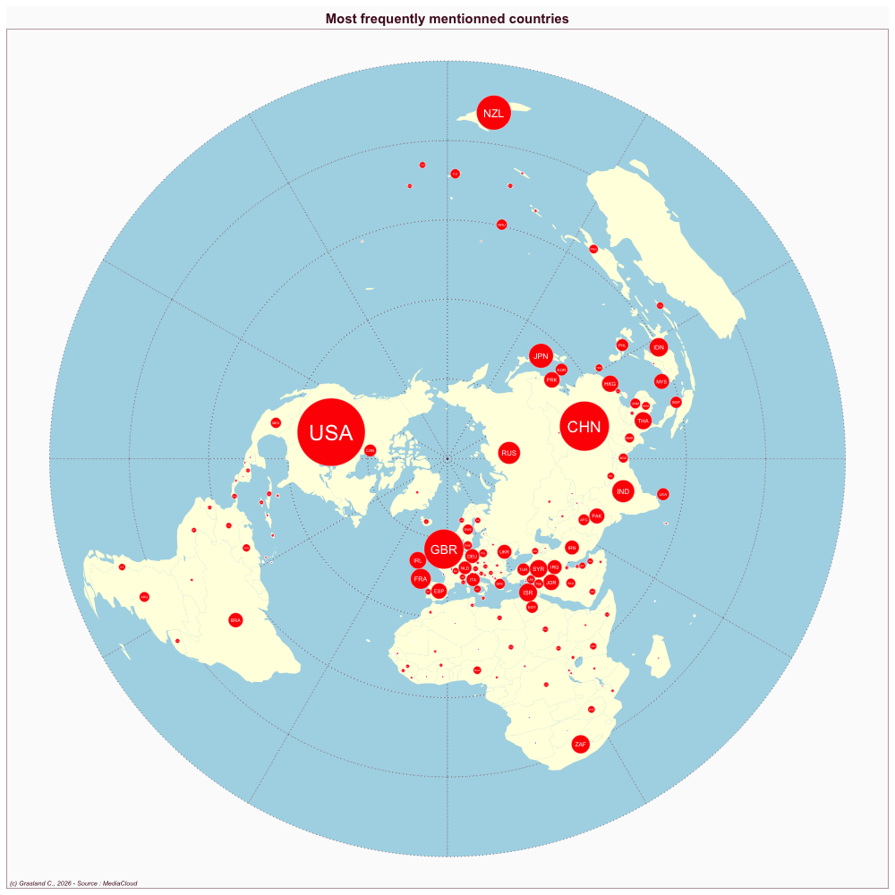

Australia
- Website : Sydney Morning Herald
Scale
- Global
- National
Topics
- General news
- Political news
- Economic news
Publications
Zion L, Sherwood M, O’Donnell P, Marjoribanks T, Ricketson M, Dodd A, Deuze M, Buller B. 2023. Media in the news: How australia’s media beat covered two major journalism change events. Journalism Practice 17: 264–282